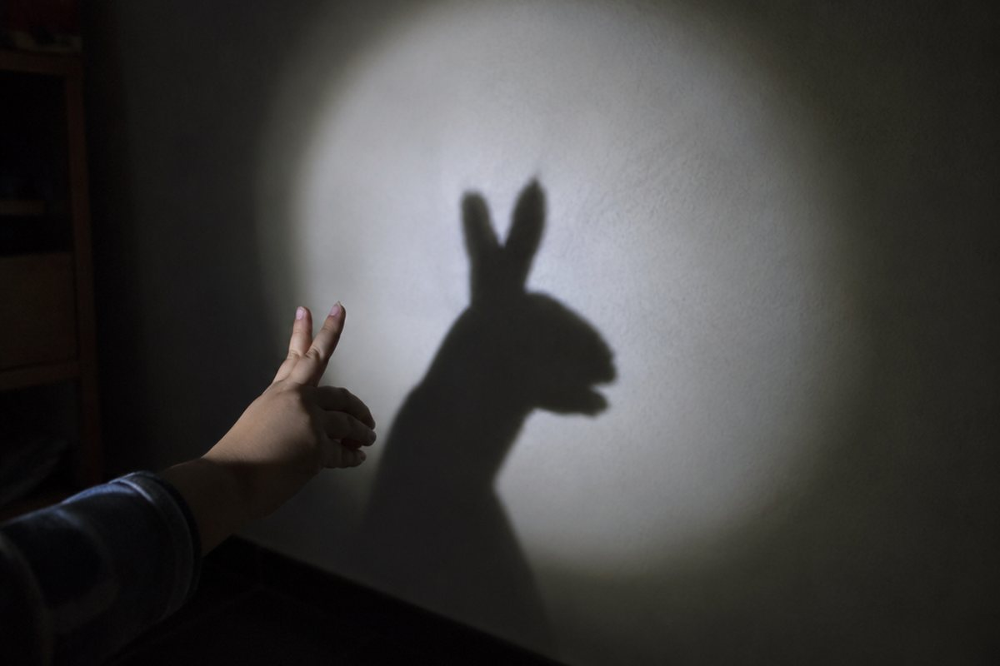

그림자는 왜 생길까?

햇빛 좋은 날 운동장에 서면 내 발밑에 까만 그림자가 따라다녀요. 그림자는 어떻게 생기는 걸까요?
빛은 곧게 나아가요
손전등을 켜면 빛이 똑바로 뻗어 나가요. 이렇게 빛이 곧게 나아가는 성질을 '빛의 직진'이라고 해요.
빛이 곧게 나아가다가 물체에 막히면, 물체 뒤쪽으로는 빛이 가지 못해요.
구름 사이로 햇빛이 쭉쭉 곧은 줄처럼 내려오는 모습을 볼 수 있어요.
그림자가 생기는 까닭
그림자가 생기려면 빛, 물체, 그리고 그림자가 비칠 스크린(벽, 땅 등)이 필요해요.
빛이 곧게 나아가다 물체에 막히면 물체 뒤쪽 스크린에 빛이 닿지 않아 어두운 그림자가 생겨요. 그래서 그림자 모양은 물체 모양과 비슷해요.
손으로 강아지 모양을 만들어 벽에 비추면 강아지 그림자가 생겨요.
투명한 물체와 불투명한 물체
유리컵처럼 빛이 대부분 통과하는 물체는 연한 그림자가 생겨요. 도자기 컵처럼 빛이 통과하지 못하는 물체는 진한 그림자가 생겨요.
그림자의 진하기는 물체가 빛을 얼마나 통과시키는지에 따라 달라져요.
투명한 비닐우산 아래는 밝고, 검은 우산 아래는 어두워요.
그림자의 크기 바꾸기
손전등과 스크린은 그대로 두고 물체를 손전등에 가까이 가져가면 그림자가 커지고, 멀리 하면 그림자가 작아져요.
또 같은 물체라도 놓는 방향을 바꾸면 그림자 모양이 달라질 수 있어요. 원기둥을 세워 옆에서 빛을 비추면 네모, 눕혀서 둥근 밑면 쪽에서 비추면 동그라미 그림자가 생겨요.
인형극에서 인형을 불빛 가까이 대면 무대에 거인처럼 큰 그림자가 생겨요.
거울은 빛을 되돌려요
빛이 나아가다 거울에 부딪치면 방향이 바뀌어 되돌아 나와요. 이것을 '빛의 반사'라고 해요.
거울에 비친 모습은 실제와 좌우가 바뀌어 보여요. 오른손을 들면 거울 속 나는 왼손을 든 것처럼 보이지요.
구급차 앞에 글자를 좌우로 바꿔 써 두면, 앞차 운전자가 뒤를 보는 거울로 볼 때 바르게 읽혀요.
핵심 낱말
- 빛의 직진
- 빛이 곧게 나아가는 성질
- 그림자
- 빛이 물체에 막혀 물체 뒤에 생기는 어두운 부분
- 투명한 물체
- 빛이 대부분 통과하는 물체
- 불투명한 물체
- 빛이 통과하지 못하는 물체
- 빛의 반사
- 빛이 거울 같은 물체에 부딪쳐 방향이 바뀌어 나아가는 것
한 줄 정리
- 빛은 곧게 나아가고, 물체에 막히면 그림자가 생겨요.
- 불투명한 물체는 진한 그림자, 투명한 물체는 연한 그림자가 생겨요.
- 물체가 빛에 가까울수록 그림자가 커지고, 거울은 빛을 반사해요.
학교 교육과정 연결
2015 개정 교육과정에서는 4학년 '그림자와 거울' 단원에서 배웠는데, 2022 개정 교육과정부터는 5~6학년(빛의 성질)에서 배워요.
- [6과02-01] 물체를 보기 위해서 빛이 있어야 함을 알고, 빛의 성질에 대해 흥미를 느낄 수 있다.
- [6과02-02] 빛이 나아가는 현상을 관찰하여 빛이 직진, 반사, 굴절하는 성질이 있음을 말할 수 있다.